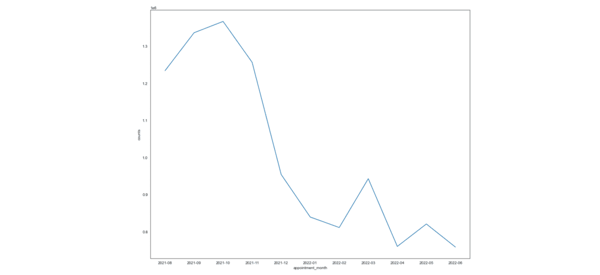
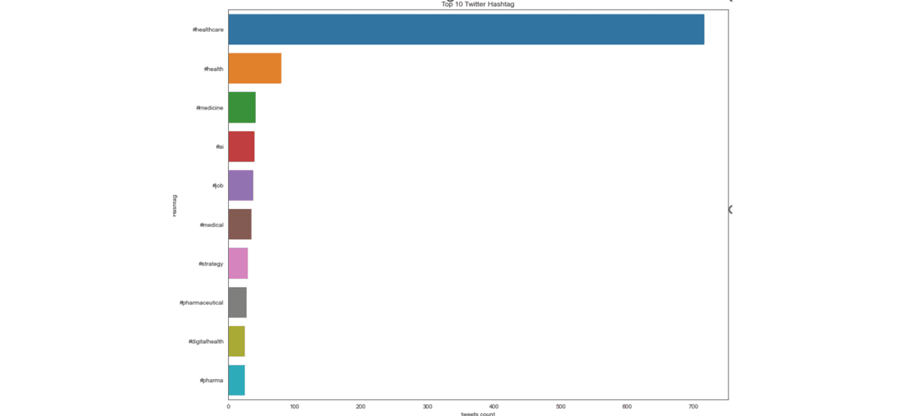

The question
What can appointment trends reveal about demand and capacity planning?
My approach
I explored appointment volumes over time and across service types, alongside a separate view of healthcare discussion on social media.
Findings & interpretation
Examine changes over time
The project charts a decline in recorded appointment volumes from late 2021 into 2022, prompting further questions about coverage and service use.
Explore seasonality
Differences across months and service types suggest areas to investigate when planning capacity.
Develop practical questions
The findings motivate further analysis of scheduling, advance booking and demand patterns.
Project visualisations





Scope & limitations
The analysis identifies patterns and possible explanations. It does not establish the causes of volume changes or show that missed appointments were reduced.